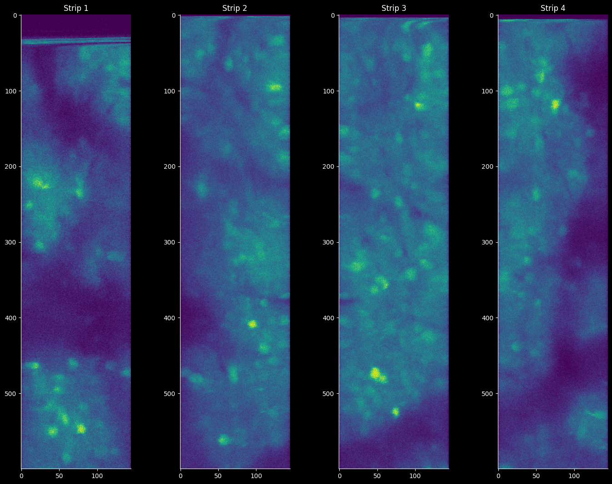

2. Suite2p Pipeline Template#
%load_ext autoreload
%autoreload 2
import sys
from pathlib import Path
# sys.path.append('/home/flynn/miniforge3/envs/suite2p/lib/python3.10/site-packages')
import numpy as np
from pathlib import Path
import matplotlib.pyplot as plt
import tifffile
import dask
import scanreader
import zarr
import matplotlib as mpl
mpl.rcParams.update({
'axes.spines.left': True,
'axes.spines.bottom': True,
'axes.spines.top': False,
'axes.spines.right': False,
'legend.frameon': False,
'figure.subplot.wspace': .01,
'figure.subplot.hspace': .01,
'figure.figsize': (18, 13),
'ytick.major.left': True,
})
jet = mpl.cm.get_cmap('jet')
jet.set_bad(color='k')
/tmp/ipykernel_1386727/1385736914.py:13: MatplotlibDeprecationWarning: The get_cmap function was deprecated in Matplotlib 3.7 and will be removed in 3.11. Use ``matplotlib.colormaps[name]`` or ``matplotlib.colormaps.get_cmap()`` or ``pyplot.get_cmap()`` instead.
jet = mpl.cm.get_cmap('jet')
data_path = Path().home() / 'caiman_data' / 'raw' / 'high_res_full.tif'
reader = tifffile.imread(str(data_path), aszarr=True)
array = zarr.open(reader)
array.info
| Type | zarr.core.Array |
|---|---|
| Data type | int16 |
| Shape | (1730, 30, 2478, 145) |
| Chunk shape | (1, 1, 2478, 145) |
| Order | C |
| Read-only | False |
| Compressor | None |
| Store type | zarr.storage.KVStore |
| No. bytes | 37296378000 (34.7G) |
| No. bytes stored | 252 |
| Storage ratio | 148001500.0 |
| Chunks initialized | 0/51900 |
scan = scanreader.read_scan([data_path])
scan.yslices
DEBUG:scanreader.scans:Initializing scan with files: ['/home/flynn/caiman_data/raw/high_res_full.tif']
[slice(0, 600, None),
slice(624, 1224, None),
slice(1248, 1848, None),
slice(1872, 2472, None)]
array.shape
(1730, 30, 2478, 145)
image = array[:, 0, ...]
image.shape
(1730, 2478, 145)
for i in range(0, len(scan.yslices)):
im = image[0, scan.yslices[i], ...]
print(im.shape)
(600, 145)
(600, 145)
(600, 145)
(600, 145)
array = zarr.open(reader)
array.nbytes
37296378000
plt.subplot(1, 4, 1)
plt.imshow(image[0, scan.yslices[0], ...])
plt.title("Strip 1");
plt.subplot(1, 4, 2)
plt.imshow(image[0, scan.yslices[1], ...])
plt.title("Strip 2");
plt.subplot(1, 4, 3)
plt.imshow(image[0, scan.yslices[2], ...])
plt.title("Strip 3");
plt.subplot(1, 4, 4)
plt.imshow(image[0, scan.yslices[3], ...])
plt.title("Strip 4");

def return_scan_offset(image_in, nvals: int=8):
from scipy import signal
image_in = image_in.squeeze()
if len(image_in.shape) == 3:
image_in = np.mean(image_in, axis=0)
elif (image_in.shape)==2:
image_in = image_in
else:
raise ValueError(f'Input must be 2 or 3 dimensional. Input has shape: {image_in.shape}')
n = nvals
in_pre = image_in[::2, :]
in_post = image_in[1::2, :]
min_len = min(in_pre.shape[0], in_post.shape[0])
in_pre = in_pre[:min_len, :]
in_post = in_post[:min_len, :]
buffers = np.zeros((in_pre.shape[0], n))
in_pre = np.hstack((buffers, in_pre, buffers))
in_post = np.hstack((buffers, in_post, buffers))
in_pre = in_pre.T.ravel(order='F')
in_post = in_post.T.ravel(order='F')
# Zero-center and clip negative values to zero
# Iv1 = Iv1 - np.mean(Iv1)
in_pre[in_pre < 0] = 0
in_post = in_post - np.mean(in_post)
in_post[in_post < 0] = 0
in_pre = in_pre[:, np.newaxis]
in_post = in_post[:, np.newaxis]
r_full = signal.correlate(in_pre[:, 0], in_post[:, 0], mode='full', method='auto')
unbiased_scale = len(in_pre) - np.abs(np.arange(-len(in_pre) + 1, len(in_pre)))
r = r_full / unbiased_scale
mid_point = len(r) // 2
lower_bound = mid_point - n
upper_bound = mid_point + n + 1
r = r[lower_bound:upper_bound]
lags = np.arange(-n, n + 1)
# Step 3: Find the correction value
correction_index = np.argmax(r)
return lags[correction_index]
offset = return_scan_offset(image[:, scan.yslices[0], ...])
def fix_scan_phase(data_in, offset,):
dims = data_in.shape
ndim = len(dims)
if ndim != 3:
raise ValueError('Must be 3D')
st, sy, sx = data_in.shape
if offset != 0:
# Create output array with appropriate shape adjustment
data_out = np.zeros((st, sy, sx + abs(offset)))
else:
print('Phase = 0, no correction applied.')
return data_in
if offset > 0:
data_out[:, 0::2, :sx] = data_in[:, 0::2, :]
data_out[:, 1::2, offset:offset + sx] = data_in[:, 1::2, :]
data_out = data_out[:, :, :sx + offset]
elif offset < 0:
offset = abs(offset)
data_out[:, 0::2, offset:offset + sx] = data_in[:, 0::2, :]
data_out[:, 1::2, :sx] = data_in[:, 1::2, :]
data_out = data_out[:, :, offset:]
return data_out
new0 = fix_scan_phase(image[:, scan.yslices[0], ...], offset)
new1 = fix_scan_phase(image[:, scan.yslices[1], ...], offset)
new2 = fix_scan_phase(image[:, scan.yslices[2], ...], offset)
new3 = fix_scan_phase(image[:, scan.yslices[3], ...], offset)
mean_img_0 = np.mean(new, axis=0)
for i in range(4):
# fix the scan phase for each slice
new_img = fix_scan_phase(image[:, scan.yslices[i], ...], offset)
# store = zarr.save_array(f'/home/flynn/caiman_data/strips/strip_{i}.tiff', new_img)
tifffile.imwrite(f'/home/flynn/caiman_data/strips/strip_{i}.tiff', new_img)
import suite2p
ops = suite2p.default_ops()
ops['batch_size'] = 1000
ops['fs'] = 10
ops['tau'] = 0.1
ops['preclassify'] = 0.0
ops['aspect'] = 1.0
ops['do_bidiphase'] = True
ops['bidiphase'] = -1
ops['do_registration'] = 1
ops['two_step_registration'] = 0
ops['nimg_init'] = 500
ops['maxregshift'] = 0.5
ops['align_by_chan'] = 1
ops['reg_tif'] = False
ops['reg_tif_chan2'] = False
ops['subpixel'] = False
ops['th_badframes'] = 1.0
ops['smooth_sigma'] = 1.15
ops['th_badframes'] = 1.0
ops['norm_frames'] = True
ops['force_refImg'] = False
ops['pad_fft'] = False
ops['nonrigid'] = True
ops['block_size'] = [128, 128]
ops['snr_thresh'] = 0.8
ops['maxregshiftNR'] = 5.0
ops['1Preg'] = False
ops['spatial_hp_reg'] = 42.0
ops['pre_smooth'] = 0.0
# ops['spatial_taper'] = 40.0
ops['roidetect'] = True
ops['spikedetect'] = True
ops['sparse_mode'] = True
# ops['spatial_scale'] = 0
ops['connected'] = True
# ops['nbinned'] = 5000
# ops['max_iterations'] = 20
# ops['threshold_scaling'] = 1.0
# ops['max_overlap'] = 0.75
# ops['high_pass'] = 100.0
# ops['spatial_hp_detect'] = 25.0
# ops['denoise'] = 0.0
# ops['anatomical_only'] = 3
# ops['cellprob_threshold'] = -5.0
# ops['flow_threshold'] = -5.0
# ops['spatial_hp_cp'] = 0.0
# ops['pretrained_model'] = 'cyto'
# ops['soma_crop'] = 1.0
ops['neuropil_extract'] = True
# ops['inner_neuropil_radius'] = 2
# ops['min_neuropil_pixels'] = 350
# ops['lam_percentile'] = 50.0
# ops['allow_overlap'] = False
# ops['use_builtin_classifier'] = False
# ops['baseline'] = 'maxmin'
# ops['win_baseline'] = 60.0
# ops['sig_baseline'] = 10.0
# ops['prctile_baseline'] = 8.0
# ops['neucoeff'] = 0.7
ops["keep_movie_raw"]=1
print(ops)
{'suite2p_version': '0.14.4', 'look_one_level_down': False, 'fast_disk': [], 'delete_bin': False, 'mesoscan': False, 'bruker': False, 'bruker_bidirectional': False, 'h5py': [], 'h5py_key': 'data', 'nwb_file': '', 'nwb_driver': '', 'nwb_series': '', 'save_path0': '', 'save_folder': [], 'subfolders': [], 'move_bin': False, 'nplanes': 1, 'nchannels': 1, 'functional_chan': 1, 'tau': 0.1, 'fs': 10, 'force_sktiff': False, 'frames_include': -1, 'multiplane_parallel': False, 'ignore_flyback': [], 'preclassify': 0.0, 'save_mat': False, 'save_NWB': False, 'combined': True, 'aspect': 1.0, 'do_bidiphase': True, 'bidiphase': -1, 'bidi_corrected': False, 'do_registration': 1, 'two_step_registration': 0, 'keep_movie_raw': 1, 'nimg_init': 500, 'batch_size': 1000, 'maxregshift': 0.5, 'align_by_chan': 1, 'reg_tif': False, 'reg_tif_chan2': False, 'subpixel': False, 'smooth_sigma_time': 0, 'smooth_sigma': 1.15, 'th_badframes': 1.0, 'norm_frames': True, 'force_refImg': False, 'pad_fft': False, 'nonrigid': True, 'block_size': [128, 128], 'snr_thresh': 0.8, 'maxregshiftNR': 5.0, '1Preg': False, 'spatial_hp_reg': 42.0, 'pre_smooth': 0.0, 'spatial_taper': 40, 'roidetect': True, 'spikedetect': True, 'sparse_mode': True, 'spatial_scale': 0, 'connected': True, 'nbinned': 5000, 'max_iterations': 20, 'threshold_scaling': 1.0, 'max_overlap': 0.75, 'high_pass': 100, 'spatial_hp_detect': 25, 'denoise': False, 'anatomical_only': 0, 'diameter': 0, 'cellprob_threshold': 0.0, 'flow_threshold': 1.5, 'spatial_hp_cp': 0, 'pretrained_model': 'cyto', 'soma_crop': True, 'neuropil_extract': True, 'inner_neuropil_radius': 2, 'min_neuropil_pixels': 350, 'lam_percentile': 50.0, 'allow_overlap': False, 'use_builtin_classifier': False, 'classifier_path': '', 'chan2_thres': 0.65, 'baseline': 'maximin', 'win_baseline': 60.0, 'sig_baseline': 10.0, 'prctile_baseline': 8.0, 'neucoeff': 0.7}
data_path = Path(f"/home/flynn/caiman_data/strips/")
for i in range(4):
print(f'Processing strip: {i+1}')
savename = Path(f'strip_{i}')
savepath = str(data_path / 'results' / savename)
db = {
'data_path': [str(data_path)],
'save_path0': savepath,
'tiff_list': [savename.with_suffix('.tiff')],
}
Path(savepath).mkdir(exist_ok=True)
output_ops = suite2p.run_s2p(ops=ops, db=db)
Processing strip: 1
{'data_path': ['/home/flynn/caiman_data/strips'], 'save_path0': '/home/flynn/caiman_data/strips/results/strip_0', 'tiff_list': [PosixPath('strip_0.tiff')]}
FOUND BINARIES AND OPS IN ['/home/flynn/caiman_data/strips/results/strip_0/suite2p/plane0/ops.npy']
removing previous detection and extraction files, if present
>>>>>>>>>>>>>>>>>>>>> PLANE 0 <<<<<<<<<<<<<<<<<<<<<<
NOTE: not running registration, plane already registered
binary path: /home/flynn/caiman_data/strips/results/strip_0/suite2p/plane0/data.bin
NOTE: applying default /home/flynn/.suite2p/classifiers/classifier_user.npy
----------- ROI DETECTION
Binning movie in chunks of length 01
Binned movie of size [1730,592,142] created in 0.88 sec.